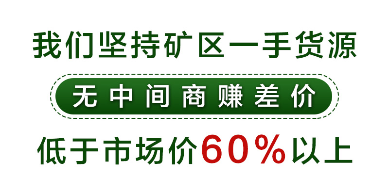
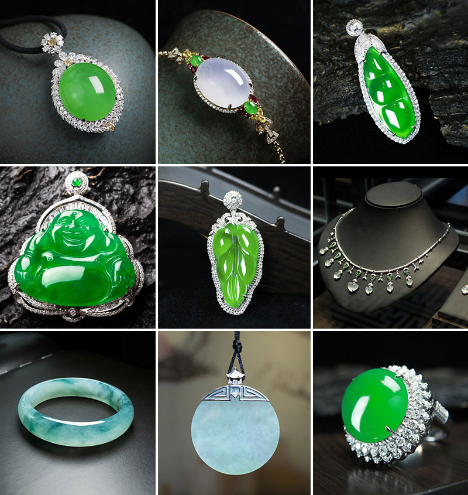
你好，我是翡翠鉴定师陈掌柜，祖辈一直在四会经营翡翠生意。从小的耳濡目染，让我与翡翠结下了不解的缘分，我希望将翡翠文化传递给更多的人•••••
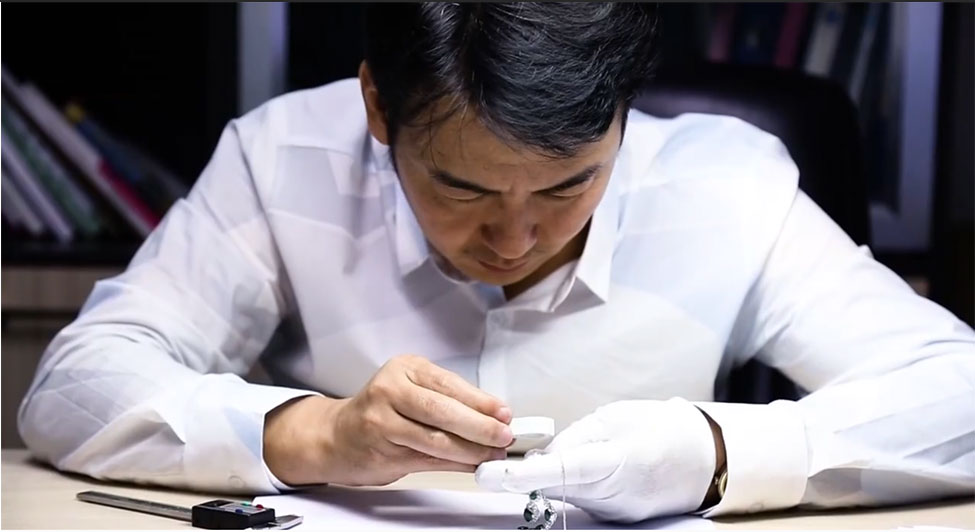
现在加陈掌柜微信即可免费获得《翡翠入门手册》一份
陈掌柜私人微信：(点击复制)
我大部分时间都会守在工厂等着手镯一步步的制作出来，有时候遇到好料子也喜欢自己上手抛光，这过程比较煎熬，同时也期待着有惊喜。
随着近年翡翠走热，市面上出现了不少以次充好、以假充真的翡翠，许多商家拿着最差的玉石充天然翡翠，价格还一路往上炒，飙升到了几十万甚至几百万的天价！把翡翠的市场搞得乌烟瘴气，想要买天然翡翠，出高价都不一定能买到。
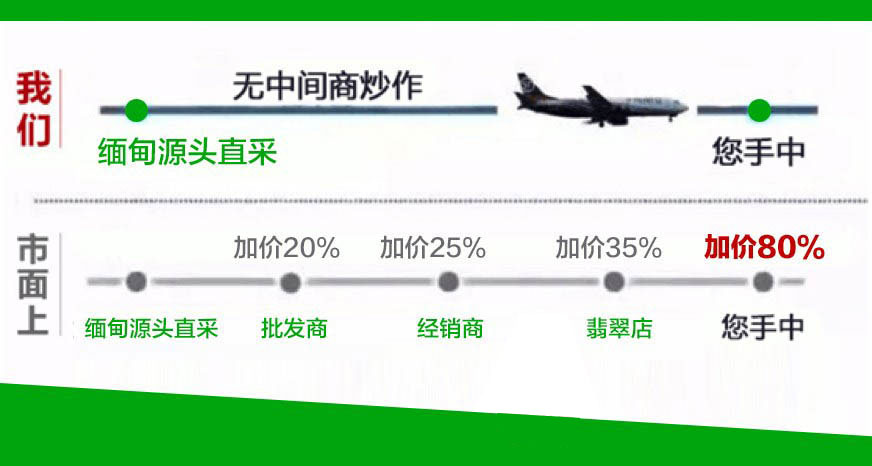
所以说买翡翠从源头买才是最好的，在大家都在炒作价格的时候，我们不能说价格是最低的，但是我们绝对是性价比最高的。尽管现在天然翡翠供不应求，但是我自己工厂绝不借此涨价。
教你挑选心仪翡翠
陈掌柜私人微信：(点击复制)
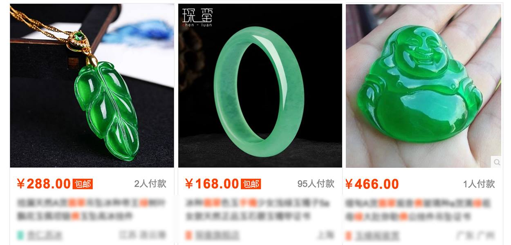
一些朋友拿某宝翡翠价格跟我们对比，说实话是对我们朴实工作的不尊重，之所以这么讲是因为某宝翡翠便宜的原因很恶劣，主要是以下几点：
由于天然翡翠开采成品率很低，不良商家为了增加颜色和光泽，人工添色素和注胶！这种翡翠长期佩戴很可能造成皮肤过敏糜烂，还存在致癌的潜在风险，无底线！还有些商家工业化雕刻产量大，但是让翡翠毫无灵性，机器雕工木呐呆滞完全没有美感。这都是我们最唾弃的恶劣行为！
（自家翡翠严格检查中）
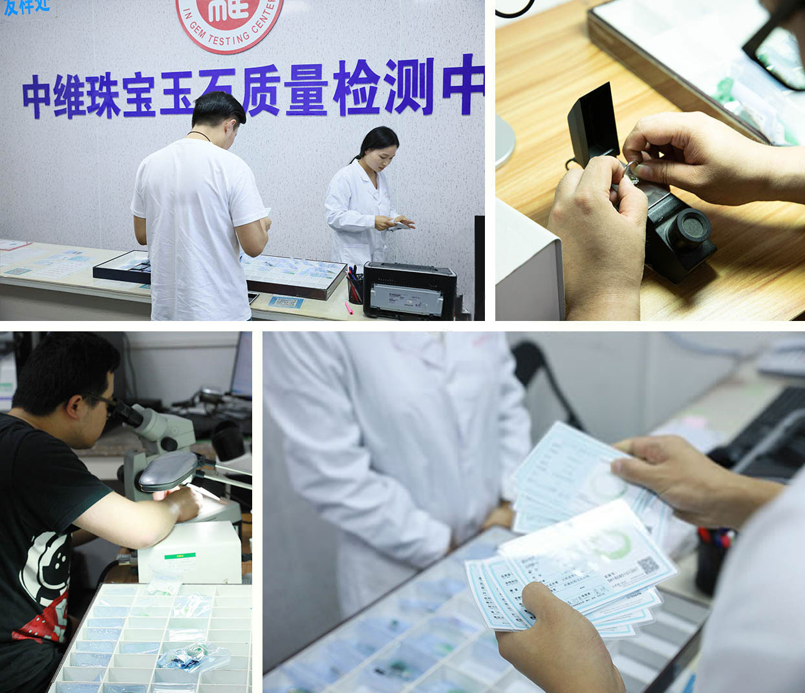
教你挑选心仪翡翠
陈掌柜私人微信：(点击复制)
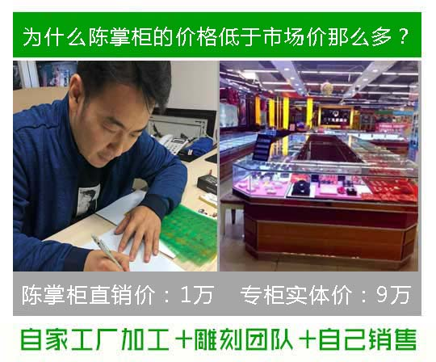
所有产品全部我们自己切割、雕刻、镶嵌，只有这样才能把成本压到极致，不然每一个环节交给别人都是成本上涨，大家就没办法获得最低价格了。到了晚上我就会开始根据来画翡翠镶金的款式，让翡翠不仅优雅也能时尚起来。
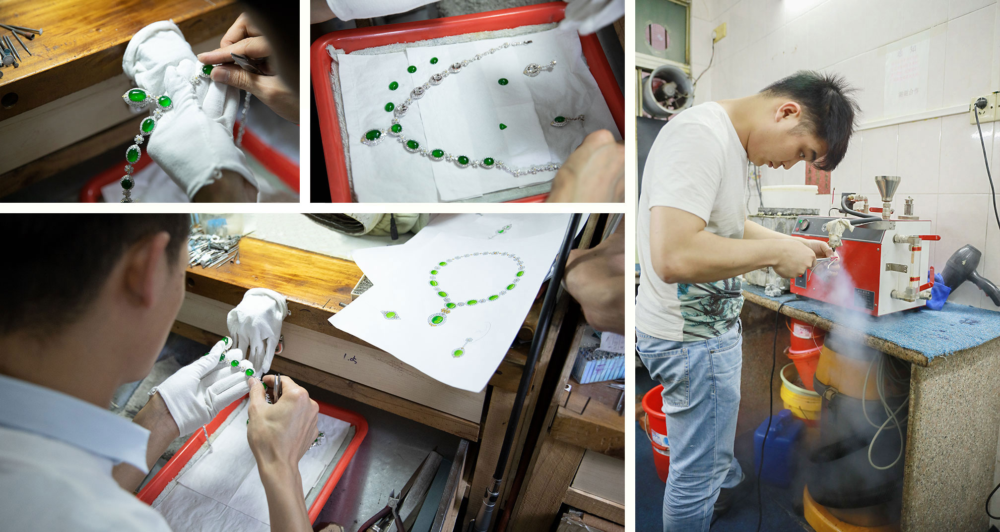
模特也是我自己，工厂刚刚制作出来我就会自己佩戴并给大家拍摄很多角度和细节，让大家能看得仔仔细细。
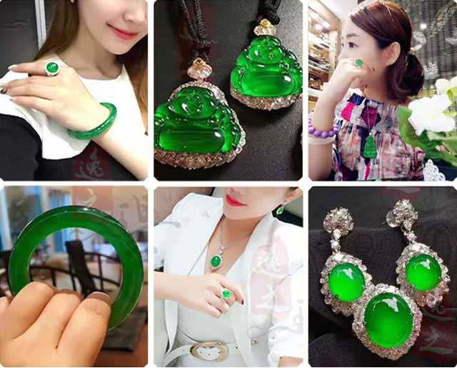
看翡翠视频和真实上身图的朋友
可以加我，让你看得清清楚楚明明白白
陈掌柜私人微信：(点击复制)
与家人一起去缅甸直采后，取料、切割、设计、雕刻一直到发货都由我亲自参与，所以每天工作比较忙。有时候有些客户的信息都来不及回， 很高兴能得到客户的信任和谅解，我家的翡翠漏价直销一直是用实力说话。
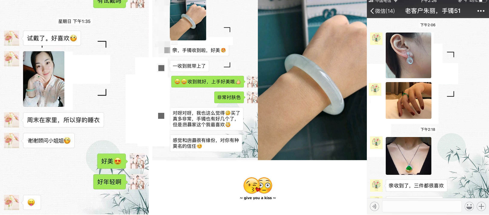
上面都是我们的老客户了，也有一些老客户是经朋友介绍加我的，以前在实体店买过翡翠， 加了我以后才知道以前买的亏了，结果来了我这就停不下来。我不是自夸，我们这每天复购的老客户比新客户还多！
我们不做一锤子买卖
买过我家翡翠的客户基本都会复购
因为真正做到了源头漏价
所以我们有这个自信
陈掌柜私人微信：(点击复制)
每次收到翠友们美美的返图，陈掌柜都觉得这是一种幸福！
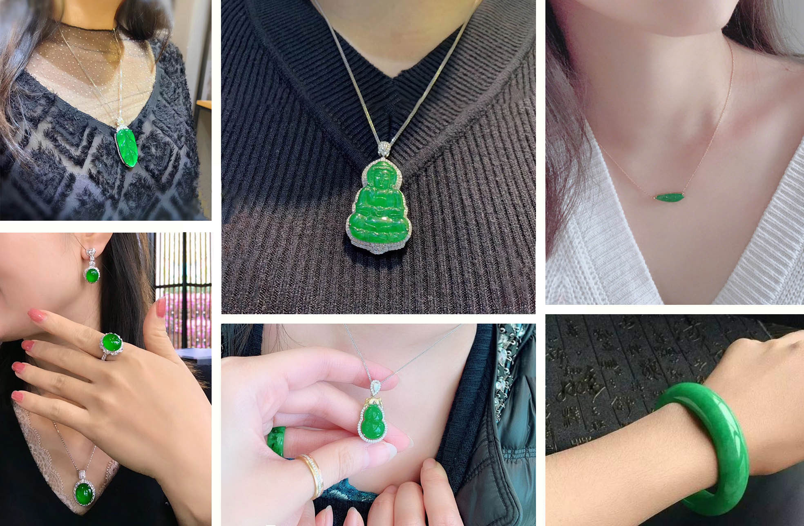
陈掌柜给您的承诺
我家的翡翠矿区直采，每件必自家工厂加工。杜绝一切人工处理，不注胶，不染色，更不以次充好。只把最真实最天然的翡翠带给大家，买我家翡翠的朋友我可以保证做到以下三点：
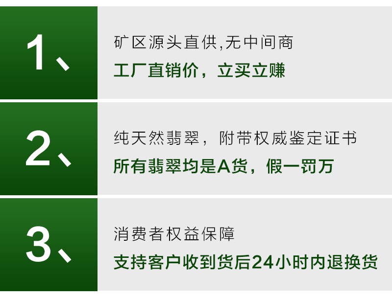
我不太懂怎么营销，但是我把每一个买翡翠喜欢翡翠的人都当做自己的好姐妹，一件好翡翠也让我和很多来自天南海北的人成为了朋友，所以我更加注重品质，时刻不忘初心，不能让不好的东西砸了招牌，也坏了大家的情谊。
今天免费领取
这本是我自己撰写的翡翠资料，也是我12年来最重要的从业经验，很希望能帮助大家，让大家能识货、能看货，学到真正的翡翠知识，今天加我的朋友可以免费领取一套！
现在加陈掌柜微信即可免费获得《翡翠入门手册》一份
陈掌柜私人微信：(点击复制)
总觉得自己拍的照片最能清楚的看到翡翠的完美和不完美的地方，就像人一样。 给客户看到的也一定要是最真实的情况，虽然累但是很有价值。
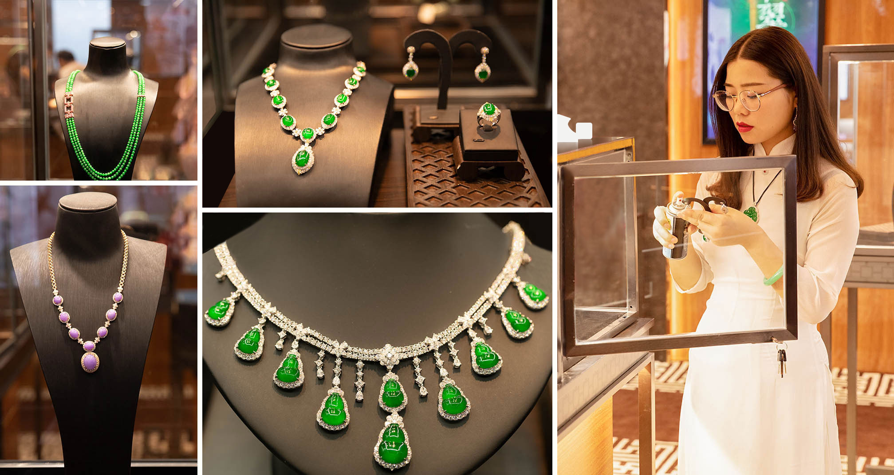
想买一手矿区翡翠的朋友
可以加我个人微信
陈掌柜私人微信：(点击复制)
假货不得人心，说真话，卖真货，标实价，陈掌柜让你买翡翠不吃亏。
版权：上海胡氏珠宝有限公司